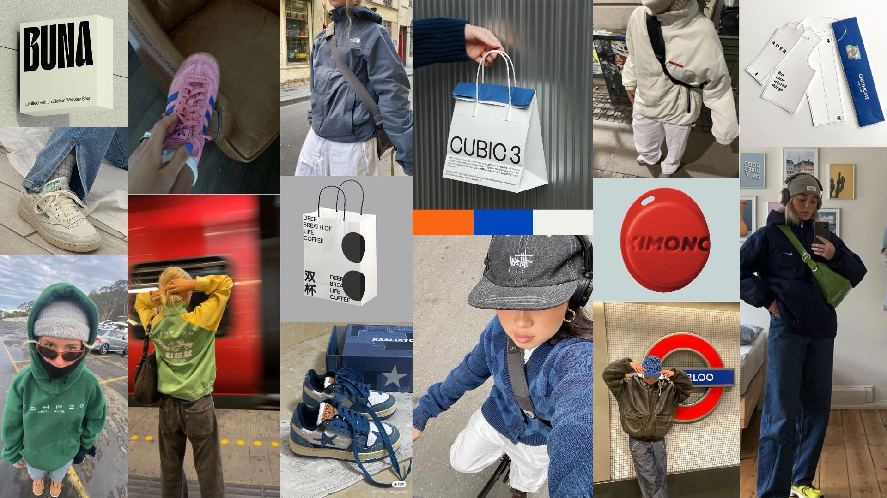

.jpg)
BES.
A complete project that combines visual identity design and web development for a fictional streetwear brand. The website was conceived as both a showcase of the collection and an immersive experience that reflects the rebellious, youthful essence of urban culture.
Briefing
Create the identity and digital platform of a clothing brand aimed at young people between 16 and 24 years old, interested in music, graffiti, skate and streetwear. The goal was to design a website that is visually striking, easy to navigate and aligned with the brand’s values: individuality, rebellion, and authenticity.
Production
The process began with research, moodboards and wireframes, followed by the development of a complete visual identity: imagotype, claim, color palette and typographic system. We organized a photo session to generate original content for the brand, later used in a promotional video and in interactive catalog elements where models rotate to show full outfits. The web was designed with responsive layouts (desktop and mobile) and implemented with HTML, CSS and JavaScript. Interactive components were added, such as hover effects, a dynamic menu inspired by clothing tags, and a button that unlocks the scroll to guide the user through the experience.
Results
A functional and visually coherent website that merges design and code. The final platform communicates the brand’s identity through a balance of bold aesthetics and clean usability, offering an engaging way to explore the collection and connect with the brand’s spirit.